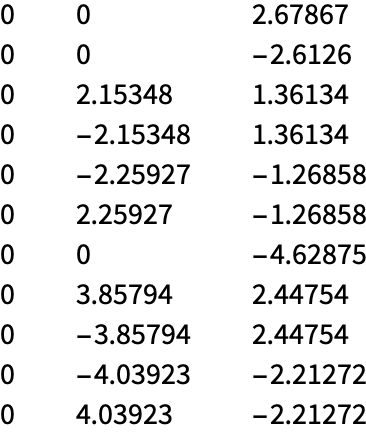
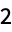
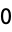
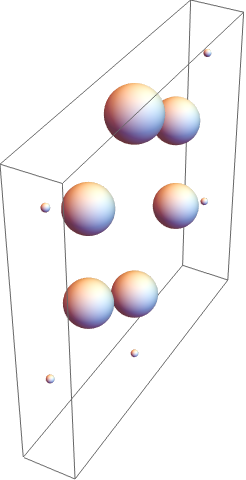

Q T A I M SYMBOL
AssociatedNuclearAttractor
AssociatedNuclearAttractor[]
AssociatedNuclearAttractor
Details
Needs["QTAIM`"];
Load the wavefunction for a molecule:
link=Install["/Users/ecbrown/src/QTAIM.wl/QTAIM/QTAIM/read_wfn"];
ElectronDensityDerivative[
wfn_,
{x_?NumericQ,y_?NumericQ,z_?NumericQ},{nx_?IntegerQ,ny_?IntegerQ,nz_?IntegerQ}]:=Module[
{nmo=wfn["NumberOfOccupiedMolecularOrbitals"],np=wfn["NumberOfPrimitives"],l=wfn["l"],xp=wfn["xp"],yp=wfn["yp"],zp=wfn["zp"],a=wfn["PrimitiveExponents"],o=wfn["MolecularOrbitalOccupationNumbers"],c=Flatten[wfn["MolecularOrbitalPrimitiveCoefficients"]],link,res},res=rho1[nmo,np,x,y,z,nx,ny,nz,xp,yp,zp,l[[All,1]],l[[All,2]],l[[All,3]],a,c,o];
res];
ElectronDensityDerivative[
wfn_,
{x_?NumericQ,y_?NumericQ,z_?NumericQ},deriv_?MatrixQ]:=Module[
{nmo=wfn["NumberOfOccupiedMolecularOrbitals"],np=wfn["NumberOfPrimitives"],l=wfn["l"],xp=wfn["xp"],yp=wfn["yp"],zp=wfn["zp"],a=wfn["PrimitiveExponents"],o=wfn["MolecularOrbitalOccupationNumbers"],c=Flatten[wfn["MolecularOrbitalPrimitiveCoefficients"]],link,res},
res=Table[
rho1[nmo,np,x,y,z,deriv[[d,1]],deriv[[d,2]],deriv[[d,3]],xp,yp,zp,l[[All,1]],l[[All,2]],l[[All,3]],a,c,o]
,{d,1,Length[deriv]}];
res
];
ElectronDensityDerivative[
wfn_,
xyz_?MatrixQ,{nx_?IntegerQ,ny_?IntegerQ,nz_?IntegerQ}]:=Module[
{nmo=wfn["NumberOfOccupiedMolecularOrbitals"],np=wfn["NumberOfPrimitives"],l=wfn["l"],xp=wfn["xp"],yp=wfn["yp"],zp=wfn["zp"],a=wfn["PrimitiveExponents"],o=wfn["MolecularOrbitalOccupationNumbers"],c=Flatten[wfn["MolecularOrbitalPrimitiveCoefficients"]],link,res},
res=Table[
rho1[nmo,np,xyz[[nn,1]],xyz[[nn,2]],xyz[[nn,3]],nx,ny,nz,xp,yp,zp,l[[All,1]],l[[All,2]],l[[All,3]],a,c,o]
,{nn,1,Length[xyz]}];
res
];
ElectronDensityDerivative[
wfn_,
xyz_?MatrixQ,deriv_?MatrixQ]:=Module[
{nmo=wfn["NumberOfOccupiedMolecularOrbitals"],np=wfn["NumberOfPrimitives"],l=wfn["l"],xp=wfn["xp"],yp=wfn["yp"],zp=wfn["zp"],a=wfn["PrimitiveExponents"],o=wfn["MolecularOrbitalOccupationNumbers"],c=Flatten[wfn["MolecularOrbitalPrimitiveCoefficients"]],link,res},
res=Table[
Table[
rho1[nmo,np,xyz[[nn,1]],xyz[[nn,2]],xyz[[nn,3]],deriv[[d,1]],deriv[[d,2]],deriv[[d,3]],xp,yp,zp,l[[All,1]],l[[All,2]],l[[All,3]],a,c,o]
,{d,1,Length[deriv]}]
,{nn,1,Length[xyz]}];
res
];
Locate nuclear critical points:
ncps=LocateNuclearCriticalPoints[w];
ncps // Chop // TableForm

Out[20]//TableForm= | |

| |
Identify nuclear critical point that is associated with a point in space:
AssociatedNuclearAttractor[w, ncps, {0.,0.,-2.5}]
AssociatedNuclearAttractor[w, ncps, {0.,0.,-2.4}]
| Out[30]= |

|
| Out[31]= |
AssociatedNuclearAttractor[w, ncps, {0.,0.,0.}]
| Out[32]= |
AssociatedNuclearAttractor[w, ncps, {0.,0.,-8}]
| Out[33]= |
AssociatedNuclearAttractor[w, ncps, {0., 8,-8}]
| Out[34]= |
AssociatedNuclearAttractor[w, ncps, {0.,-8, 8}]
| Out[35]= |

|
AssociatedNuclearAttractor[w, ncps, {0., 8, 8}]
| Out[36]= |
Delineate the atomic basin for Nitrogen:
rp=RegionPlot[
AssociatedNuclearAttractor[w, ncps, {0., y, z}] == 1,
{y, -8, 8},
{z, -8, 8}
]
Show[
Graphics[
Table[
Disk[ncps[[i,{2,3}]], 0.1*(w["AtomicNumbers"])[[i]] ],
{i, 1, Length[ncps]}]
],
rp
]
| Out[9]= |
Delineate the atomic basin for Nitrogen:
rp3=RegionPlot3D[
AssociatedNuclearAttractor[w, ncps, {x, y, z}] == 1,
{x, -10, 10},
{y, -10, 10},
{z, -10, 10}
]
Show[
Graphics3D[
Table[
Sphere[ncps[[i]], 0.1*w["AtomicNumbers"][[i]] ],
{i, 1, Length[ncps]}]
],
rp3
]
| Out[6]= |

|